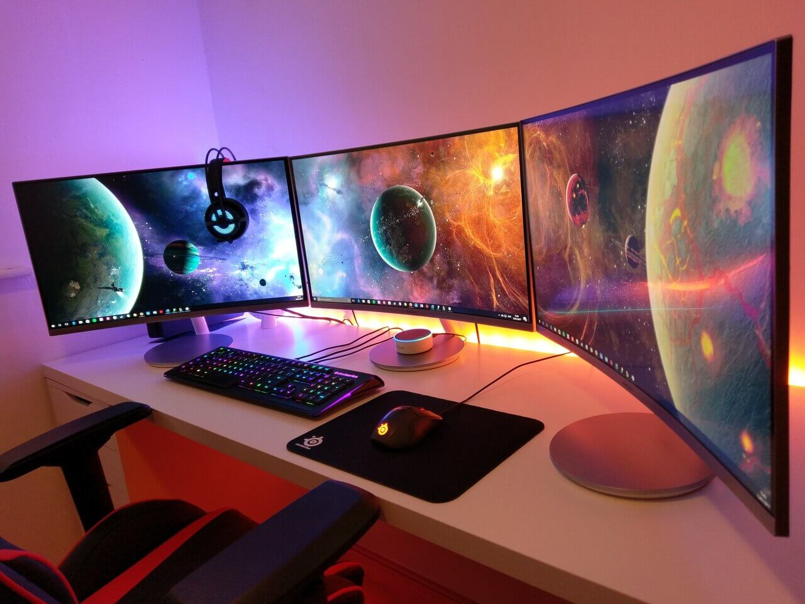

Mission Statement
My Resume shows that I have several years of great experience and skills gained in the IT field. These skills are mostly centered around desktop/network/cloud infrastructure R&D implementation and support. I have developed additional skills with my education that will be beneficial to the position you are deciding if I would make a good candidate for. My goal is that the information provided on this website will not only keep your interest, but also prove that I am a great candidate for that position and worth interviewing and eventually hiring.
Values Statement
My IT job history proves that my core values align with Amazons leadership principles. One of those core examples is learn and be curious. My continual grind to seek higher education shows that I too seek to continually learn more skills that would be beneficial to advancing my professional career and make me a more desirable employee. This website will help better illustrate those skills gained through my continued quest to seek higher education.
Vision Statement
I know that not only am I a great candidate for the position you are looking to fill, but I would also become a highly valued member of your team if hired. I’ve proven this at every stop of my professional career. I started in IT with 0 experience and minimal education as a volunteer and quickly outperformed many of my coworkers and proved my value. That employer looked for ways they could hire me on full time which they eventually did. I have proven to be a highly valued employee at each of my IT employers and know I will continue to prove that I would be a highly valued employee at Amazon when hired.